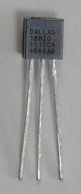
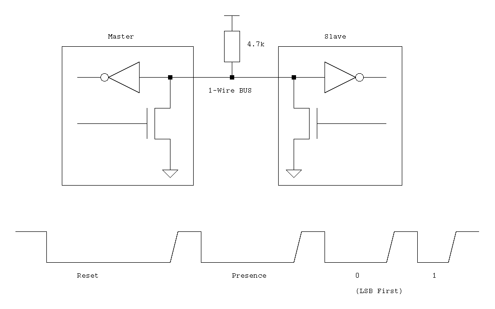

The DS18B20 is a 1-Wire digital thermometer. It is accurate to ±0.5°C.


| Parameter | Recommended (μs) |
|---|---|
| A | 6 |
| B | 64 |
| C | 60 |
| D | 10 |
| E | 9 |
| F | 55 |
| G | 0 |
| H | 480 |
| I | 70 |
| J | 410 |
| Command | Code |
|---|---|
| Search ROM | 0xf0 |
| Read ROM | 0x33 |
| Match ROM | 0x55 |
| Skip ROM | 0xcc |
| Alarm Search | 0xec |
| Command | Code |
|---|---|
| Convert T | 0x44 |
| Write Scratchpad | 0x4e |
| Read Scratchpad | 0xbe |
| Copy Scratchpad | 0x48 |
| Recall E2 | 0xb8 |
| Read Power Supply | 0xb4 |
| R1 R0 | Resolution (Bits) | Max Conversion Time (ms) |
|---|---|---|
| 0 0 | 9 | 93.75 |
| 0 1 | 10 | 187.5 |
| 1 0 | 11 | 375 |
| 1 1 (default) | 12 | 750 |